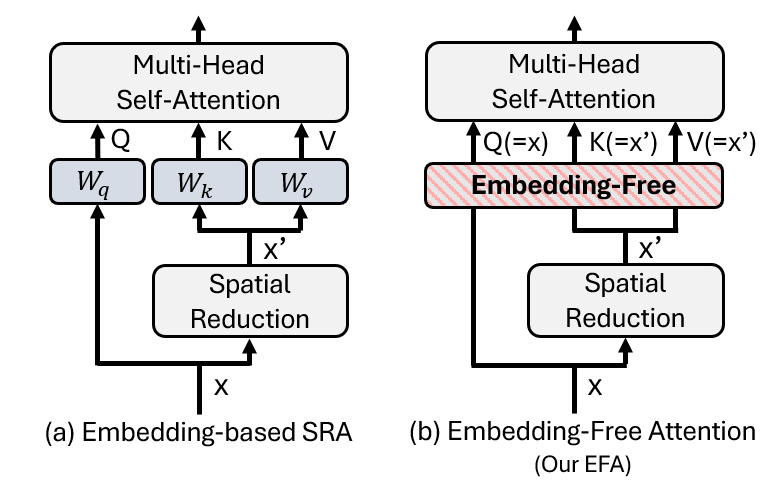
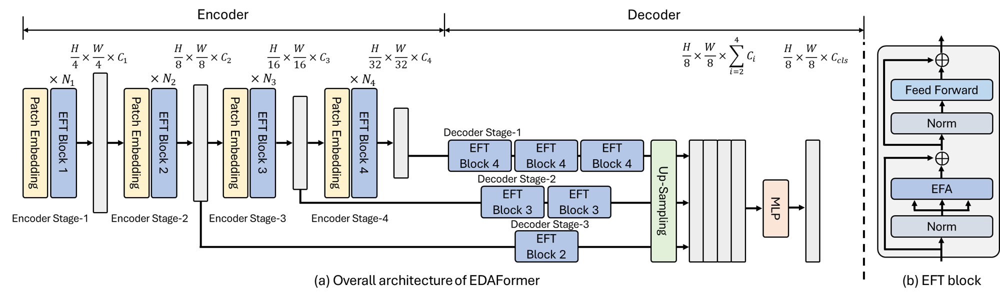
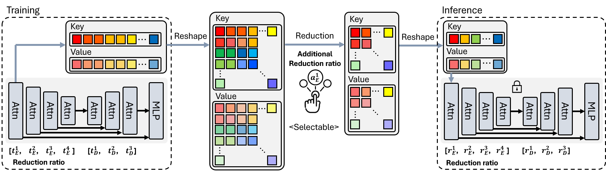

1. We propose a novel Embedding-Free Attention (EFA) structure, which removes the embeddings of the query, key and value in the attention mechanism. EFA leads to the competitive performance on image classification and semantic segmentation tasks. We empirically find that EFA is effective for our ISR in terms of considering the trade-off between computation and performance degradation.

Figure 1. Comparison of the previous attention structure and our EFA structure
2. We present EDAFormer, a powerful semantic segmentation model with the proposed Embedding-Free Transformer encoder and all-attention decoder. The all-attention decoder exploits the more number of the proposed EFA module at the higher level to capture the global context more effectively.

Figure 2. (a) Overall architeucture of EDAFormer (b) Details of Embedding-Free Transformer block
3. We present Inference Spatial Reduction (ISR) method, which reduces the key-value spatial resolution more at the inference phase than the training phase. ISR enables the models to reduce the computational cost with less degradation in segmentation performance at the inference phase. Without additional training, ISR allows to selectively adjust computational costs of the trained model.

Figure 3. Overview of ISR method at the 1st stage of the encoder. Our ISR adjusts the reduction ratio at the inference, reducing the key and value tokens selectively. This framework can be performed at every stage that contains the self-attention structure. It leads to flexibly reduce the computational cost without disrupting the spatial structure.
4. EDAFormer surpasses the previous transformer-based segmentation models in terms of both efficiency and accuracy on ADE20K, Cityscapes and COCO-Stuff benchmarks.